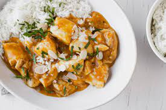

Apricot Chicken

Description
Easy and very budget friendly sticky apricot chicken.
Cooks in about 10-15 minutes and goes well with rice and extra veggies.
Ingredients
- 1 tbsp olive oil
- 1 brown/red onion - chopped
- 500g chicken breast/thighs
- 250g apricot jam
- 1 tbsp light soy sauce
- 2 tbsp siracha
- 1 tbsp rice wine vinegar
- Fresh coriander, to serve
- Zuchini - diced, to serve
Preparation
- Step 1
- Heat oil in a frying pan over high heat.
Cook chicken for 4-5 minutes or until golden.
While chicken is cooking, mix together jam, siracha, soy sauce and vinegar
- Step 2
- Add the mixed ingredients to the pan.
Cook for a few minutes until mixture gets sticky.
- Step 3
- Return chicken to pan and cook it for a few more minutes.
Once chicken is coated in mixture you are finished.
- Step 4
- Steam the diced zuchini in the microwave for 1 minute.
Serve with rice. Top with fresh coriander and steamed zuchini
Check out my other recipes
Take me home